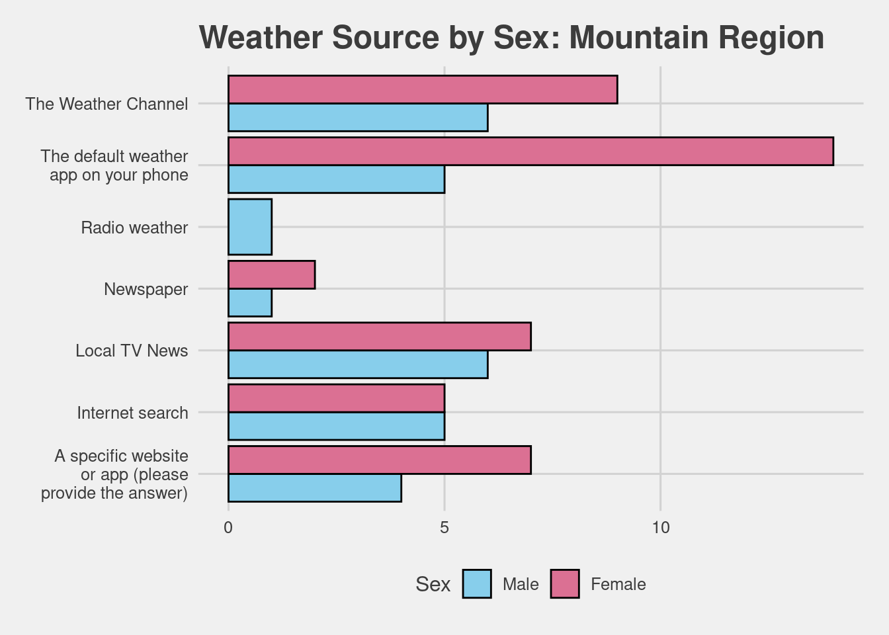

Last updated: 2020-10-06
Checks: 7 0
Knit directory: Analysis - Concept and Practice/
This reproducible R Markdown analysis was created with workflowr (version 1.6.2). The Checks tab describes the reproducibility checks that were applied when the results were created. The Past versions tab lists the development history.
Great! Since the R Markdown file has been committed to the Git repository, you know the exact version of the code that produced these results.
Great job! The global environment was empty. Objects defined in the global environment can affect the analysis in your R Markdown file in unknown ways. For reproduciblity it’s best to always run the code in an empty environment.
The command set.seed(20200911) was run prior to running the code in the R Markdown file. Setting a seed ensures that any results that rely on randomness, e.g. subsampling or permutations, are reproducible.
Great job! Recording the operating system, R version, and package versions is critical for reproducibility.
Nice! There were no cached chunks for this analysis, so you can be confident that you successfully produced the results during this run.
Great job! Using relative paths to the files within your workflowr project makes it easier to run your code on other machines.
Great! You are using Git for version control. Tracking code development and connecting the code version to the results is critical for reproducibility.
The results in this page were generated with repository version e23b930. See the Past versions tab to see a history of the changes made to the R Markdown and HTML files.
Note that you need to be careful to ensure that all relevant files for the analysis have been committed to Git prior to generating the results (you can use wflow_publish or wflow_git_commit). workflowr only checks the R Markdown file, but you know if there are other scripts or data files that it depends on. Below is the status of the Git repository when the results were generated:
Ignored files:
Ignored: .RData
Ignored: .Rhistory
Ignored: .Rproj.user/
Ignored: analysis/.Rhistory
Untracked files:
Untracked: code/01-initialisation.R
Untracked: to-do.Rmd
Unstaged changes:
Modified: _workflowr.yml
Modified: analysis/_site.yml
Modified: analysis/index.Rmd
Modified: analysis/style.css
Note that any generated files, e.g. HTML, png, CSS, etc., are not included in this status report because it is ok for generated content to have uncommitted changes.
These are the previous versions of the repository in which changes were made to the R Markdown (analysis/wc-article.Rmd) and HTML (docs/wc-article.html) files. If you’ve configured a remote Git repository (see ?wflow_git_remote), click on the hyperlinks in the table below to view the files as they were in that past version.
| File | Version | Author | Date | Message |
|---|---|---|---|---|
| html | e23b930 | JJCoen | 2020-10-06 | Build site. |
| Rmd | e194e6e | JJCoen | 2020-10-06 | wflow_publish(c("analysis/*.Rmd")) |
In April 2015, Walt Hickey at 538.com published an article entitled “Where People Go To Check The Weather”. This article utilized survey data collected from 928 people which asked questions on if they typically check the weather on a daily basis and if so, what source they used to check the weather. Additional follow-up questions were asked about which specific websites or apps they used and if they had a smartwatch if they would check the weather on that smartwatch.
The “weather check” dataset that was used for the “Where People Go To Check The Weather” article, is available through the R package fivethirtyeight. Using this dataset, this article summarizes the weather source preferences for the Mountain Region of the United States by gender.
For our summary presented here, a subset of the original weather check dataset was extracted to only include responses with no missing data and only included respondents from the Mountain region of the US. The data subset used for our summary had 72 respondents.
This section provides demographic summary tables for the 72 survey respondents.
| Category | % | Category | % | Category | % |
|---|---|---|---|---|---|
| 18 - 29 | 16.67 | FALSE | 38.89 | $0 to $9,999 | 4.17 |
| $200,000 and up | 6.94 | ||||
| Prefer not to answer | 18.06 | ||||
| 30 - 44 | 19.44 | TRUE | 61.11 | $10,000 to $24,999 | 13.89 |
| 45 - 59 | 30.56 | $25,000 to $49,999 | 12.50 | ||
| 60+ | 33.33 | $50,000 to $74,999 | 18.06 | ||
| $75,000 to $99,999 | 11.11 | ||||
| $100,000 to $124,999 | 6.94 | ||||
| $125,000 to $149,999 | 6.94 | ||||
| $150,000 to $174,999 | 1.39 | ||||
| $175,000 to $199,999 | 0.00 |
Finally, here is a breakdown of the 72 survey respondents for the Mountain region of the US on how they check their daily weather by sex

| Version | Author | Date |
|---|---|---|
| e23b930 | JJCoen | 2020-10-06 |
─ Session info ───────────────────────────────────────────────────────────────
setting value
version R version 4.0.2 (2020-06-22)
os Pop!_OS 20.04 LTS
system x86_64, linux-gnu
ui X11
language en_US:en
collate en_US.UTF-8
ctype en_US.UTF-8
tz Europe/Dublin
date 2020-10-06
─ Packages ───────────────────────────────────────────────────────────────────
package * version date lib source
assertthat 0.2.1 2019-03-21 [1] CRAN (R 4.0.0)
backports 1.1.9 2020-08-24 [1] CRAN (R 4.0.2)
blob 1.2.1 2020-01-20 [1] CRAN (R 4.0.0)
broom 0.7.0 2020-07-09 [1] CRAN (R 4.0.2)
callr 3.4.4 2020-09-07 [1] CRAN (R 4.0.2)
cellranger 1.1.0 2016-07-27 [1] CRAN (R 4.0.0)
cli 2.0.2 2020-02-28 [1] CRAN (R 4.0.0)
colorspace 1.4-1 2019-03-18 [1] CRAN (R 4.0.0)
crayon 1.3.4 2017-09-16 [1] CRAN (R 4.0.0)
DBI 1.1.0 2019-12-15 [1] CRAN (R 4.0.0)
dbplyr 1.4.4 2020-05-27 [1] CRAN (R 4.0.0)
desc 1.2.0 2018-05-01 [1] CRAN (R 4.0.0)
devtools 2.3.1 2020-07-21 [1] CRAN (R 4.0.2)
digest 0.6.25 2020-02-23 [1] CRAN (R 4.0.0)
dplyr * 1.0.2 2020-08-18 [1] CRAN (R 4.0.2)
ellipsis 0.3.1 2020-05-15 [1] CRAN (R 4.0.0)
evaluate 0.14 2019-05-28 [1] CRAN (R 4.0.0)
fansi 0.4.1 2020-01-08 [1] CRAN (R 4.0.0)
farver 2.0.3 2020-01-16 [1] CRAN (R 4.0.0)
fivethirtyeight * 0.6.1 2020-08-05 [1] CRAN (R 4.0.2)
forcats * 0.5.0 2020-03-01 [1] CRAN (R 4.0.0)
fs 1.5.0 2020-07-31 [1] CRAN (R 4.0.2)
generics 0.0.2 2018-11-29 [1] CRAN (R 4.0.0)
ggplot2 * 3.3.2 2020-06-19 [1] CRAN (R 4.0.1)
ggthemes * 4.2.0 2019-05-13 [1] CRAN (R 4.0.0)
git2r 0.27.1 2020-05-03 [1] CRAN (R 4.0.0)
glue 1.4.2 2020-08-27 [1] CRAN (R 4.0.2)
gtable 0.3.0 2019-03-25 [1] CRAN (R 4.0.0)
haven 2.3.1 2020-06-01 [1] CRAN (R 4.0.1)
highr 0.8 2019-03-20 [1] CRAN (R 4.0.0)
hms 0.5.3 2020-01-08 [1] CRAN (R 4.0.0)
htmltools 0.5.0 2020-06-16 [1] CRAN (R 4.0.1)
httpuv 1.5.4 2020-06-06 [1] CRAN (R 4.0.1)
httr 1.4.2 2020-07-20 [1] CRAN (R 4.0.2)
jsonlite 1.7.1 2020-09-07 [1] CRAN (R 4.0.2)
kableExtra * 1.2.1 2020-08-27 [1] CRAN (R 4.0.2)
knitr * 1.29 2020-06-23 [1] CRAN (R 4.0.2)
labeling 0.3 2014-08-23 [1] CRAN (R 4.0.0)
later 1.1.0.1 2020-06-05 [1] CRAN (R 4.0.1)
lifecycle 0.2.0 2020-03-06 [1] CRAN (R 4.0.0)
lubridate 1.7.9 2020-06-08 [1] CRAN (R 4.0.1)
magrittr * 1.5 2014-11-22 [1] CRAN (R 4.0.0)
memoise 1.1.0 2017-04-21 [1] CRAN (R 4.0.0)
modelr 0.1.8 2020-05-19 [1] CRAN (R 4.0.0)
munsell 0.5.0 2018-06-12 [1] CRAN (R 4.0.0)
pillar 1.4.6 2020-07-10 [1] CRAN (R 4.0.2)
pkgbuild 1.1.0 2020-07-13 [1] CRAN (R 4.0.2)
pkgconfig 2.0.3 2019-09-22 [1] CRAN (R 4.0.0)
pkgload 1.1.0 2020-05-29 [1] CRAN (R 4.0.1)
prettyunits 1.1.1 2020-01-24 [1] CRAN (R 4.0.0)
processx 3.4.4 2020-09-03 [1] CRAN (R 4.0.2)
promises 1.1.1 2020-06-09 [1] CRAN (R 4.0.1)
ps 1.3.4 2020-08-11 [1] CRAN (R 4.0.2)
purrr * 0.3.4 2020-04-17 [1] CRAN (R 4.0.0)
R6 2.4.1 2019-11-12 [1] CRAN (R 4.0.0)
Rcpp 1.0.5 2020-07-06 [1] CRAN (R 4.0.2)
readr * 1.3.1 2018-12-21 [1] CRAN (R 4.0.0)
readxl 1.3.1 2019-03-13 [1] CRAN (R 4.0.0)
remotes 2.2.0 2020-07-21 [1] CRAN (R 4.0.2)
reprex 0.3.0 2019-05-16 [1] CRAN (R 4.0.0)
rlang 0.4.7 2020-07-09 [1] CRAN (R 4.0.2)
rmarkdown 2.3 2020-06-18 [1] CRAN (R 4.0.1)
rprojroot 1.3-2 2018-01-03 [1] CRAN (R 4.0.0)
rstudioapi 0.11 2020-02-07 [1] CRAN (R 4.0.0)
rvest 0.3.6 2020-07-25 [1] CRAN (R 4.0.2)
scales 1.1.1 2020-05-11 [1] CRAN (R 4.0.0)
sessioninfo 1.1.1 2018-11-05 [1] CRAN (R 4.0.0)
stringi 1.5.3 2020-09-09 [1] CRAN (R 4.0.2)
stringr * 1.4.0 2019-02-10 [1] CRAN (R 4.0.0)
testthat 2.3.2 2020-03-02 [1] CRAN (R 4.0.0)
tibble * 3.0.3 2020-07-10 [1] CRAN (R 4.0.2)
tidyr * 1.1.2 2020-08-27 [1] CRAN (R 4.0.2)
tidyselect 1.1.0 2020-05-11 [1] CRAN (R 4.0.0)
tidyverse * 1.3.0 2019-11-21 [1] CRAN (R 4.0.0)
usethis 1.6.1 2020-04-29 [1] CRAN (R 4.0.0)
vctrs 0.3.4 2020-08-29 [1] CRAN (R 4.0.2)
viridisLite 0.3.0 2018-02-01 [1] CRAN (R 4.0.0)
webshot 0.5.2 2019-11-22 [1] CRAN (R 4.0.0)
whisker 0.4 2019-08-28 [1] CRAN (R 4.0.0)
withr 2.2.0 2020-04-20 [1] CRAN (R 4.0.0)
workflowr * 1.6.2 2020-04-30 [1] CRAN (R 4.0.1)
xfun 0.17 2020-09-09 [1] CRAN (R 4.0.2)
xml2 1.3.2 2020-04-23 [1] CRAN (R 4.0.0)
yaml 2.2.1 2020-02-01 [1] CRAN (R 4.0.0)
[1] /home/oremus/R/x86_64-pc-linux-gnu-library/4.0
[2] /usr/local/lib/R/site-library
[3] /usr/lib/R/site-library
[4] /usr/lib/R/library